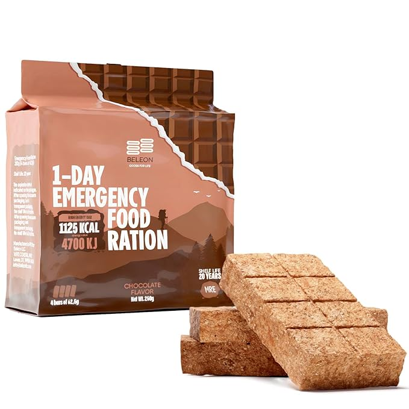
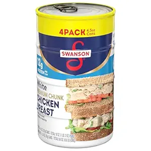

5 Things I Stopped Buying Once I Realized Western Society Is Doomed
When you wake up and realize the entire system is literally burning, your wallet starts making different decisions. I stopped prepping for the weekend and started prepping for the worst. And once I did, I saw how much money I was wasting on trash that would be completely useless to me in a single bad week.
The modern world wants you fat, distracted, and dependent with no attention span, so that you can no longer construct your own thoughts and ideas. But I made the switch. I quit impulse spending and started buying with a longer-term survival mindset. Dependable gear over Dopamine rush. Here are five things I no longer buy and what I use instead now that I’ve taken preparedness seriously.
1. Bottled Water
I used to buy bottled water like it was going out of style. But it’s bulky, expensive, and useless when the taps run dry for real. Now I use the Brita Large Water Filter Pitcher in my kitchen, my shop, and anywhere clean water might become a luxury. We use it on a regular basis at my house. It's It filters out nasty taste and some contaminants (which is handy when your town is under a boil order) lasts months, and saves money fast. Every home should have one even if you’ve got bigger filters for SHTF.

2. Gallons of Water
You don’t need 100 one-gallon plastic jugs that split when bumped wrong. You need one good water carrier. I replaced jugs with the Coleman 5 Gallon Water Carrier. Thick Durable Plastic-Food Grade, UV-resistant, and stackable, this thing stores clean water like a champ. Whether I’m on the road, camping with the family, or topping off reserves, it’s a permanent part of my setup now. I keep several under my bed full of emergency water and several more in my garage.
3. Fast Food and Junk Snacks
Junk food for survival is a joke. Your body needs real fuel, not ramen noodles. These days, I stock a wide variety of shelf stable foods, including these delicious little nutrition bars which are surprisingly pretty damn tastey. Like this Emergency Food Supply – Chocolate High Energy Bar. It’s military-style rations that taste like gritty brownies and pack calories like a punch. Shelf life? 20 years. It’ll outlive most people I know. I keep some in the truck, some in my office, and some in my get-home bag. Beats stale chips and overpriced jerky.
Get Yours Now 4. Frozen Dinners and Expensive Meat
Used to be, a well stocked freezer was my backup plan. Until I realized a single power outage could wipe out a week’s worth of meals. So I still enjoy those things but I also pivoted to shelf-stable protein. Chicken of the Sea Chunk Light Tuna became a go-to. It’s clean, wild-caught, affordable, and ready to eat right out of the can. And you can include it to just about any recipe. I keep ten-packs in my pantry and stash a few in bug-out bags too. Tuna melts, cold tuna with mustard, or just fork-and-go. Protein never goes out of style.

5. Deli Chicken and Takeout Protein
When the lights go out, your favorite hot deli chicken is just spoiled meat. I ditched deli bird and keep Swanson White Premium Chunk Chicken Breast instead. It’s clean, reliable protein that lasts on the shelf for years. I’ve mixed it with rice, pasta, Ramen, and even made survival tacos with it. Two-pack or multi-pack deals let me rotate it regularly without ever going without. It’s lean, tasty, and won’t disappear when Uber Eats does.
Bottom line? Every dollar you spend should serve your survival. I stopped buying garbage. Now I stack what matters. Clean water, calories, long-term food, and gear that holds up when things fall apart. If you’re not prepping like it’s already happening, you’re already behind.